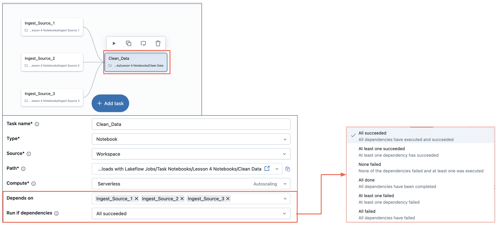
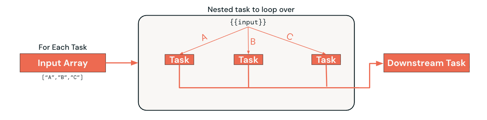

Section 4 · Working with Lakeflow Jobs · Quelle: Kurs 2, Kapitel 8–10
Nicht jeder Workflow lässt sich als starre Abfolge von Tasks abbilden. Manchmal soll ein Task nur laufen, wenn ein bestimmtes Ergebnis vorliegt; manchmal muss dieselbe Logik auf eine unbekannte Anzahl von Eingabewerten angewendet werden. Für solche Fälle bietet Lakeflow Jobs drei fortgeschrittene Task-Muster: Run-if-Abhängigkeiten, If/Else-Tasks und For-Each-Tasks. Zusammen erlauben sie dynamische Workflows, die auf Laufzeitbedingungen reagieren, statt starr vorgegeben zu sein.
Standardmäßig wartet ein Task, bis alle vorgelagerten Tasks erfolgreich abgeschlossen sind („All succeeded“). Für robustere Workflows lässt sich diese Bedingung jedoch feiner steuern:
Das sind die sechs festen, in der UI/API vorgegebenen Optionen – eine frei definierbare, benutzerdefinierte Bedingung gibt es nicht.
Diese Bedingungen erhöhen die Ausfallsicherheit eines Workflows deutlich: Ist ein Task etwa so konfiguriert, dass er läuft, sobald mindestens einer von zwei Vorgängern erfolgreich war, kann er trotzdem starten, wenn einer der beiden Vorgänger fehlschlägt. Das verhindert Kaskadenausfälle und spiegelt reale Geschäftsprozesse wider, bei denen es oft mehrere gültige Wege zum Ziel gibt.

Während Run-if-Bedingungen nur den Status vorheriger Tasks berücksichtigen, ermöglichen If/Else-Tasks echte boolesche Logik basierend auf Daten, Parametern oder berechneten Kennzahlen. Unterstützt werden die Operatoren ==, !=, >, >=, < und <=. Typische Anwendungsfälle sind Datenqualitäts-Gates (Verzweigung je nach Datensatzanzahl oder Null-Anteil), unterschiedliche Verarbeitungsstrategien je nach Datenvolumen oder umgebungsabhängige Logik (Dev/Stage/Prod). Jeder der beiden Zweige – True und False – kann beliebig viele eigene Folge-Tasks enthalten.
Ein konkretes Beispiel aus der Praxis: Ein vorgelagerter Task prüft eine Tabelle auf doppelte Datensätze und speichert das Ergebnis als Task Value.
# Im vorgelagerten Task: Duplikate pruefen und Ergebnis als Task Value speichern
df = spark.sql("SELECT * FROM customers_sales_silver")
duplicate_exists = df.count() > df.dropDuplicates().count()
dbutils.jobs.taskValues.set(key="has_duplicates", value=duplicate_exists)
Der If/Else-Task greift anschließend über eine dynamische Wertreferenz auf dieses Ergebnis zu und prüft die Bedingung tasks.customers_sales_summary.values.has_duplicates == true. Ist die Bedingung wahr, läuft der Zweig, der Duplikate bereinigt; andernfalls läuft direkt die Transformation ohne Bereinigungsschritt.
Ein For-Each-Task wiederholt dieselbe Logik für jedes Element einer Eingabeliste – etwa für jeden Bundesstaat, jede Kundengruppe oder jede zu verarbeitende Datei. Er besteht aus zwei Bausteinen:
Inputs) und die Nebenläufigkeit (Concurrency), also wie viele Iterationen parallel laufen dürfen.{{input}}.Downstream-Tasks hängen dabei nur vom gesamten For-Each-Container ab, nicht von jeder einzelnen Iteration – das hält den DAG übersichtlich, auch wenn im Hintergrund Dutzende Iterationen laufen. Ein Beispiel: Aus einer Tabelle mit Bestelldaten sollen separate Auswertungstabellen für die Bundesstaaten Kalifornien, New York und Virginia erzeugt werden, jeweils mit demselben Notebook, aber unterschiedlichem Parameterwert:
# Konfiguration des For-Each-Containers (vereinfachtes Beispiel)
# Inputs: ["CA", "NY", "VA"]
# Nested Task: Notebook "9.5 - For Each: Customer orders State"
# Parameter: state = {{input}} -> wird pro Iteration automatisch befuellt

{{input}}-Referenz.